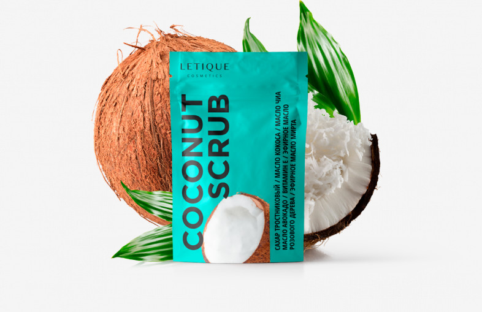

КАКОСОВЫЙ СКРАБ
Описание
В состав скраба входят тростниковый сахар, масло кокоса, масло чиа, масло авокадо, витамин Е, эфирное масло розового дерева, эфирное масло мирта.
Скрабы на основе сахара отличаются деликатным воздействием на кожу, они бережно полируют её, не оставляя раздражения. Смесь масел кокоса, авокадо и чиа смягчает кожу и насыщает её полезными веществами, а эфирные масла и витамин Е глубоко увлажняют кожу, способствуют исчезновению растяжек и увеличению эластичности.
250 г
6000 тг
Эффекты
Кокосовое масло обладает огромным количеством полезных витаминов и минералов. Благодаря витаминам группы B, А, C, Е кожа становится нежной, гладкой и эластичной. Мелкие неровности бережно разглаживаются. Кроме того кокосовое масло содержит лауриновую кислоту, которая является природным антисептиком.
В сочетании с маслом авокадо кокосовый скраб мягко очищает, увлажняет и восстанавливает цвет кожи. После применения скраба остается приятный ванильный аромат, положительно сказывающийся на общем расслаблении всего тела.
Применение
Нанесите скраб на увлажненное тело, желательно после ванны или душа, когда кожа слегка распарена. Помассируйте зону нанесения круговыми движениями, уделяя особое внимание проблемным местам. После этого смойте остатки скраба теплой водой и промокните кожу полотенцем.
Состав
Sucrose (Brown Sugar), Cocos Nucifera (Coconut) Shell Powder, Coconut Oil, Juglans Regia (Persian Walnut) Seed Oil, Persea Gratissima (Avocado) Oil, Chia Seed Oil, Glycerin, Tocopheryl Acetate, Vanilla Planifolia (Vanilla) Essential Fruit Oil, Chlorphenesin, Rosewood Essential Oil, Green Myrtle Leaf Essential Oil.